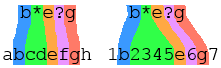

Wildcard patterns work in a similar way to Substring patterns. However, in a wildcard
pattern the
* and
? characters have special meaning:
* = "match any number of characters"
? = "match any single character".
So, as shown in the following image, the pattern
b*e?g matches both
abcdefgh and
1b2345e6g7 as follows:
